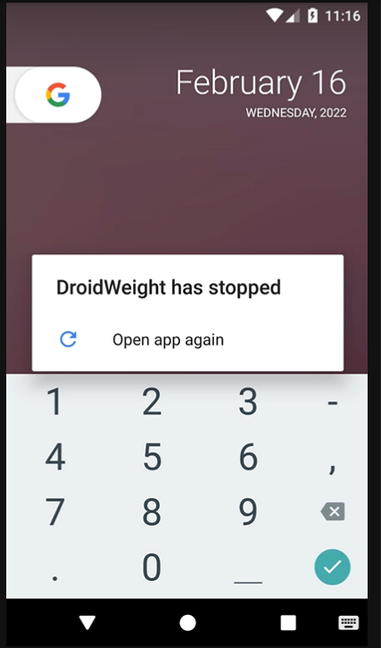

Bug summary:
Application has stopped
Observed Behavior (a description of what happened with the app):
I wanted to calculate BMI. So I go to the statistics page and press BMI Calculator button. Then I put the value of height and weight. When I pressed Go button the application got crushed and stopped working.
Expected Behavior (a description of what you expected to happen):
I expected it would show me the BMI after proper calculation.
Steps to Reproduce (the steps to reproduce the problem):
1. Go to statistics page and press BMI calculator button
2. Put the values of height and weight
3. Press go button to calculate the BMI
Additional information:
Attachments:
